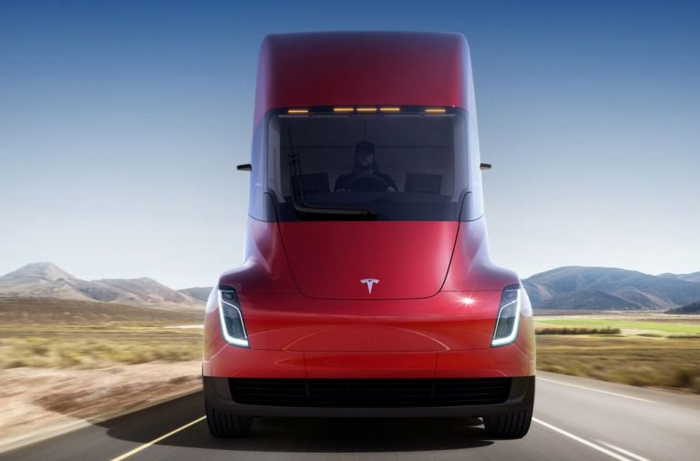

Tesla Trucks spotted Supercharging on their first cargo trip
Tesla caused quite a stir with its all-electric semi truck when it unveiled the vehicle in November. Boasting 0 to 60 mph in a zippy five seconds (sans trailer) and a range of 500 miles, as well as autonomou s driving features and a design unlike any truck that’s gone before, Tesla CEO Elon Musk hopes the Tesla Semi will one day transform the long-haul trucking industry. On Wednesday, Musk posted a photo showing a couple of the trucks e mbarking on their first-ever delivery run. The ride, which involves transporting battery packs between two Tesla facilities, covers a round-trip distance of just under 500 miles, so it could complete the trip on a single charge. “First production cargo trip of the Tesla Semi heavy duty truck, carrying battery packs from the Gigafactory in the Nevada mountains to the car factory in California,” the CEO wrote in a message posted on Instagram.

Tesla is aiming to sell the truck to shipping firms starting in 2019, but initially, while it tests and refines the vehicle, it’ll run its own operation consisting of rides similar to Wednesday’s effort. The truck with the 500-mile range is expected to cost from $180,000, while a 300-mile model will start at $150,000. There’ll also be a limited edition “Founders Series” — a thousand will be produced — starting at around $200,000 each. News of the truck’s first outing comes a few weeks after we heard about the company’s apparent plans for a vital part of the platform’s infrastructure: charging stations. According to Reuters, Tesla is working with early customers of its electric semi truck — among them Anheuser-Busch, PepsiCo, and the United Parcel Service — to build the charging stations on their own sites. The report said some of the companies are exploring the idea of sharing the charging facilities with one another for efficiency and cost savings. And just like the Supercharger stations for its cars, Tesla is also believed to be making plans for its own facilities along highways to sell electricity to truckers looking for a top-up. Tesla’s entry into the trucking business comes as a number of new players look to shake up the industry. This week, for example, we learned that Uber recently started delivering freight in Arizona using its autonomous truck, while Waymo and others are also investing heavily in the development of their own self-driving trucks.
Base Specs:
Acceleration 0-60 mph with 80k lbs(fully loaded) : 20 sec
Mile Range: 300 or 500 miles
Energy Consumption : Less than 2 kWh per mile
Fuel Savings $200,000+ Expected Base Price (300 mile range) : $150,000
Expected Base Price (500 mile range) : $180,000